Clase 6 Extensiones para regresión lineal y logística
Los modelos lineales son modelos simples que tienen la ventaja de que es relativamente fácil entender cómo contribuyen las variables de entrada a la predicción (simplemente describimos los coeficientes), y es relativamente fácil ajustarlos, y es fácil hacer cálculos con ellos.
Sin embargo, puede ser que sean pobres desde el punto de vista predictivo. Hay dos razones:
Los coeficientes tienen varianza alta, de modo que las predicciones resultantes son inestables (por ejemplo, por pocos datos o variables de entradas correlacionadas). En este caso, vimos que con el enfoque de regularización ridge o lasso podemos mejorar la estabilidad, las predicciones, y obtener modelos más parsimoniosos.
El modelo tiene sesgo alto, en el sentido de que la estructura lineal es deficiente para describir patrones claros e importantes en los datos. Este problema puede suceder cuando tenemos relaciones complejas entre las variables. Cuando hay relativamente pocas entradas y suficientes datos, puede ser posible ajustar estructuras más realistas y complejas. Aunque veremos otros métodos para atacar este problema más adelante, a veces extensiones simples del modelo lineal pueden resolver este problema. Igualmente, esperamos encontrar mejores predicciones con modelos más realistas.
6.1 Cómo hacer más flexible el modelo lineal
La idea básica es entonces transformar a nuevas entradas, antes de ajustar un modelo: \[(x_1,...,x_p) \to (b_1(x),...,b_M (x)).\]
donde típicamente \(M\) es mayor que \(p\). Entonces, en lugar de ajustar el modelo lineal en las \(x_1,\ldots, x_p\), que es
\[ f(x) = \beta_0 + \sum_{i=1}^p \beta_jx_j\]
ajustamos un modelo lineal en las entradas transformadas:
\[ f(x) = \beta_0 + \sum_{i=1}^M \beta_jb_j(x).\]
Como cada \(b_j\) es una función que toma valores numéricos, podemos considerarla como una entrada derivada de las entradas originales.
Ejemplo
Si \(x_1\) es compras totales de un cliente de tarjeta de crédito, y \(x_2\) es el número de compras, podemos crear una entrada derivada \(b_1(x_1,x_2)=x_1/x_2\) que representa el tamaño promedio por compra. Podríamos entonces poner \(b_2(x_1,x_2)=x_1\), \(b_3(x_1,x_2)=x_2\), y ajustar un modelo lineal usando las entradas derivadas \(b_1,b_2, b_3\).
Lo conveniente de este enfoque es que lo único que hacemos para hacer más flexible el modelo es transformar en primer lugar las variables de entrada (quizá produciendo más entradas que el número de variables originales). Después construimos un modelo lineal, y todo lo que hemos visto aplica sin cambios: el modelo sigue siendo lineal, pero el espacio de entradas es diferente (generalmente expandido).
Veremos las siguientes técnicas:
- Agregar versiones transformadas de las variables de entrada
- Incluir variables cualitativas (categóricas).
- Interacciones entre variables: incluir términos de la forma \(x_1x_2\)
- Regresión polinomial: incluír términos de la forma \(x_1^2\), \(x_1^3\), etcétera.
- Splines de regresión.
6.2 Transformación de entradas
Una técnica útil para mejorar el sesgo de modelos de regresión consiste en incluir o sustituir valores transformados de las variables de entrada.
Ejemplo: agregar entradas transformadas
Empezamos por predecir el valor de una casa en función de calidad de terminados.
Preparamos los datos:
library(tidyverse)
cbbPalette <- c("#000000", "#E69F00", "#56B4E9", "#009E73", "#F0E442", "#0072B2", "#D55E00", "#CC79A7")
theme_set(theme_minimal())
datos_casas <- read_csv('./tareas/tarea_6_datos/data_train.csv', na="")
set.seed(9911)
indices_entrena <- sample(1:nrow(datos_casas), 1000)
casas_e <- datos_casas[indices_entrena, ] %>% mutate(log_price = log(SalePrice))
casas_p <- datos_casas[-indices_entrena, ] %>% mutate(log_price = log(SalePrice))Ajustamos el modelo y lo probamos
mod_1 <- lm(SalePrice ~ OverallQual , data = casas_e)
calc_error <- function(mod, datos_p, y_name = "SalePrice"){
preds <- predict(mod, newdata = datos_p)
dat <- data_frame(pred = preds, observado = datos_p[[y_name]])
error <- sqrt(mean((preds - datos_p[[y_name]])^2))
grafica <- ggplot(dat, aes(x = preds, y = observado)) +
geom_point(alpha = 0.5) + geom_abline(colour = "red") +
annotate("text", x = 1000, y= 300000, label = paste0("rmse ", round(error))) +
geom_smooth(method="loess", span = 2, method.args=list(family= "symmetric"))
print(grafica)
error
}
calc_error(mod_1, casas_p, "SalePrice")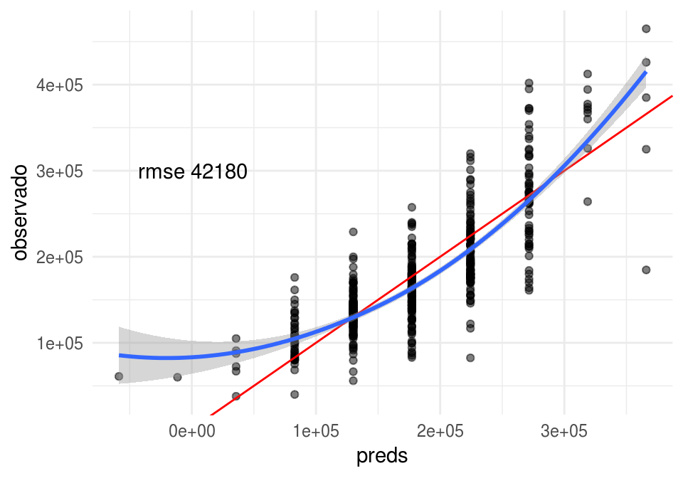
## [1] 42180.17Y notamos que nuestras predicciones parecen estar sesgadas: tienden a ser bajas cuando el valor de la casa es alto o bajo. Esto es signo de sesgo, y usualmente implica que existen relaciones no lineales en las variables que estamos considerando, o interacciones que no estamos incluyendo en nuestro modelo.
Una técnica es agregar entradas derivadas de las que tenemos, usando transformaciones no lineales. Por ejemplo, podríamos hacer:
mod_2 <- lm(SalePrice ~ OverallQual + I(OverallQual^2) , data = casas_e)
calc_error(mod_2, casas_p, "SalePrice")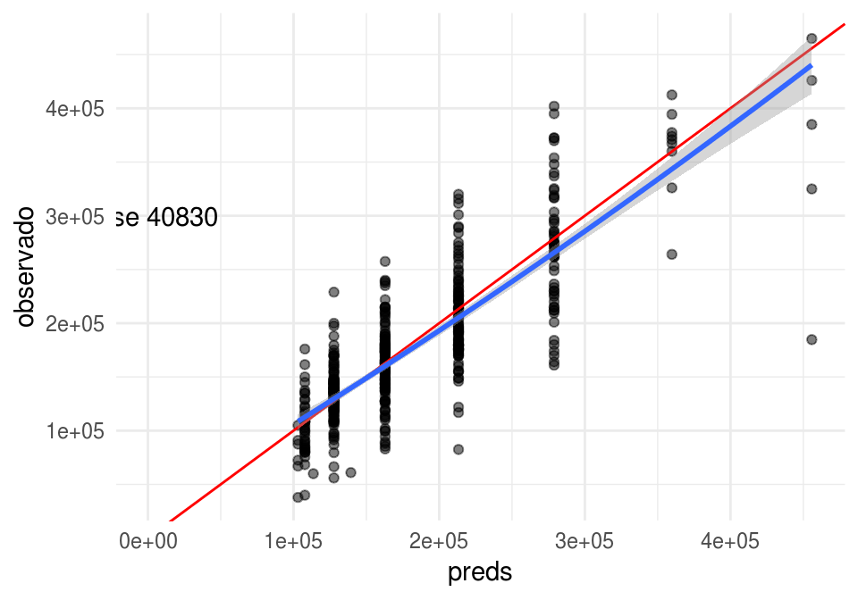
## [1] 40830Y redujimos el error de prueba. Esta reducción claramente proviene de una reducción de sesgo, pues usamos un modelo más complejo (una variable adicional).
Ahora agregamos otras variables: el tamaño del área habitable, garage y sótano, y condición general,
mod_3 <- lm(SalePrice ~ OverallQual + I(OverallQual^2) + OverallCond +
GrLivArea + TotalBsmtSF + GarageArea,
data = casas_e)
calc_error(mod_3, casas_p, "SalePrice")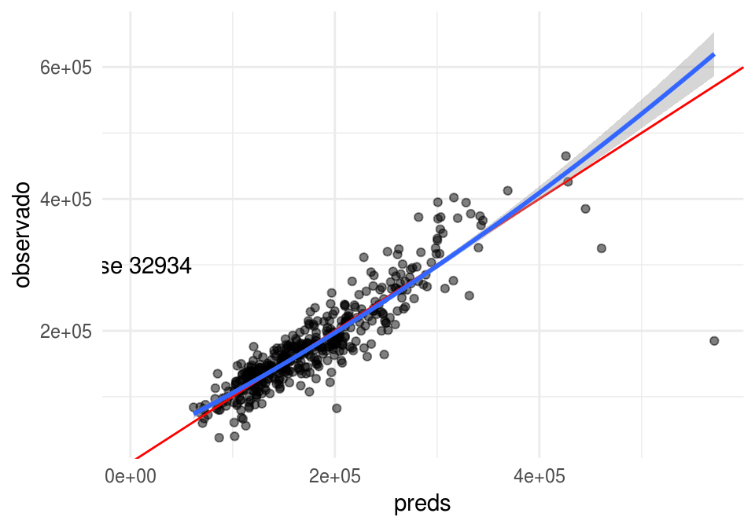
## [1] 32933.89Podemos pensar en expandir el modelo de maneras distintas. Por ejemplo, podríamos incluir la relación que hay entre tamaño del sótano y área habitable:
mod_4 <- lm(SalePrice ~ OverallQual + I(OverallQual^2) + GrLivArea + TotalBsmtSF +
GarageArea + OverallCond +
I( TotalBsmtSF / GrLivArea) + I( GarageArea / GrLivArea),
data = casas_e)
calc_error(mod_4, casas_p, "SalePrice")
## [1] 32957.83Y estos cambios parecen no mejorar nuestro modelo.
6.3 Variables cualitativas
Muchas veces queremos usar variables cualitativas como entradas de nuestro modelo. Pero en la expresión
\[ f(x) = \beta_0 + \sum_{i=1}^p \beta_jx_j,\] todas las entradas son numéricas. Podemos usar un truco simple para incluir variables cualitativas
Ejemplo
Supongamos que queremos incluir la variable CentralAir, si tiene aire acondicionado central o no. Podemos ver en este análisis simple que, por ejemplo, controlando por tamaño de la casa, agrega valor tener aire acondicionado central:
casas_e %>% group_by(CentralAir) %>% count## # A tibble: 2 x 2
## # Groups: CentralAir [2]
## CentralAir n
## <chr> <int>
## 1 N 67
## 2 Y 933ggplot(casas_e,
aes(x=GrLivArea, y=SalePrice, colour=CentralAir, group=CentralAir)) +
geom_jitter(alpha=1) +
geom_smooth(method='lm', se=FALSE, size=1.5) +
scale_y_log10(breaks=c(0.25,0.5,1,2))+
scale_x_log10(breaks=c(500,1000,2000,4000,8000))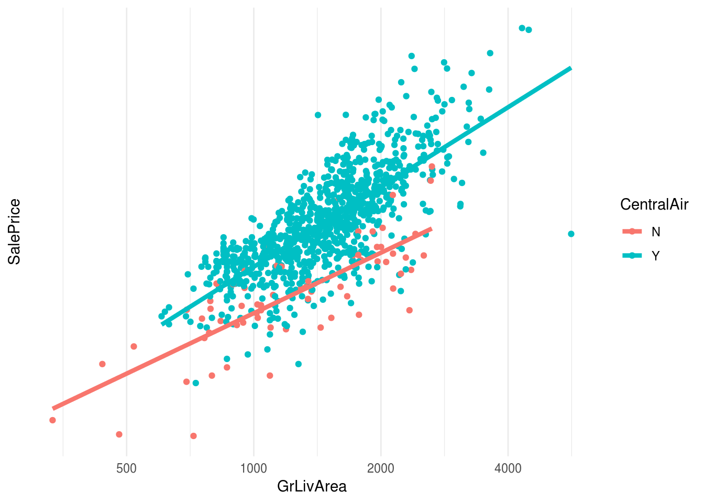
Podemos incluir de manera simple esta variable creando una variable dummy o indicadora, que toma el 1 cuando la casa tiene AC y 0 si no:
casas_e <- casas_e %>% mutate(AC_present = as.numeric(CentralAir == "Y"))
casas_e %>% select(Id, CentralAir, AC_present)## # A tibble: 1,000 x 3
## Id CentralAir AC_present
## <int> <chr> <dbl>
## 1 1070 Y 1
## 2 730 Y 1
## 3 1326 N 0
## 4 1193 Y 1
## 5 1079 Y 1
## 6 85 Y 1
## 7 1143 Y 1
## 8 910 Y 1
## 9 1063 N 0
## 10 371 Y 1
## # ... with 990 more rowsY ahora podemos hacer:
mod_5 <- lm(SalePrice ~ OverallQual + I(OverallQual^2) + GrLivArea + TotalBsmtSF +
GarageArea + OverallCond + CentralAir,
data = casas_e)
calc_error(mod_5, casas_p, "SalePrice")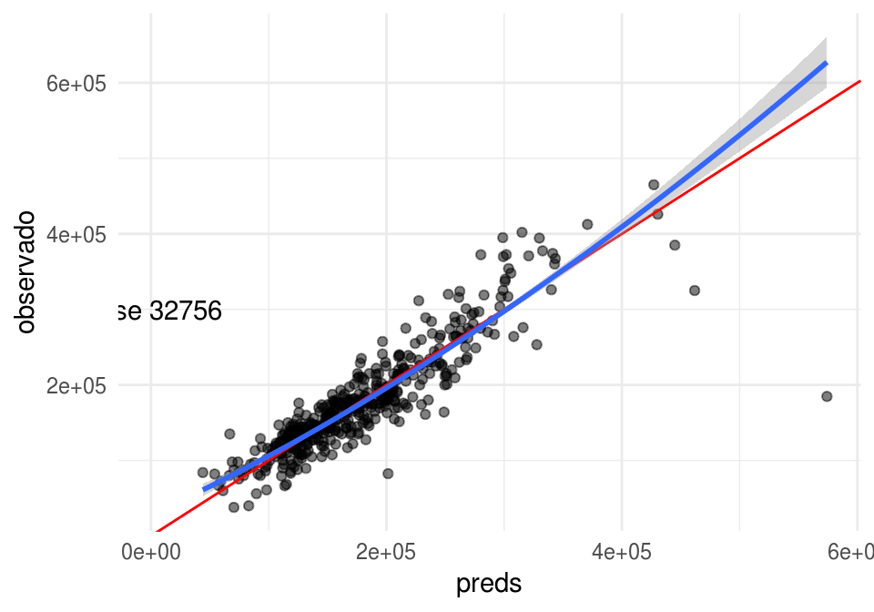
## [1] 32755.62Que no es una gran mejora, pero esperado dado que pocas de estas casas tienen aire acondicionado.
Cuando la variable categórica tiene \(K\) clases, solo creamos variables indicadores de las primeras \(K-1\) clases, pues la dummy de la última clase tiene información redundante: es decir, si para las primeras \(K-1\) clases las variables dummy son cero, entonces ya sabemos que se trata de la última clase \(K\), y no necesitamos incluir una indicadora para la última clase.
Ejemplo
Vamos a incluir la variable BsmtQual, que tiene los niveles:
casas_e %>% group_by(BsmtQual) %>% count## # A tibble: 5 x 2
## # Groups: BsmtQual [5]
## BsmtQual n
## <chr> <int>
## 1 Ex 93
## 2 Fa 26
## 3 Gd 409
## 4 NA 27
## 5 TA 445Podemos hacer una gráfica exploratoria como la anterior:
ggplot(casas_e,
aes(x=GrLivArea, y=SalePrice, colour=BsmtQual, group=BsmtQual)) +
geom_jitter(alpha=1) +
geom_smooth(method='lm', se=FALSE, size=1.5) +
scale_y_log10(breaks=c(0.25,0.5,1,2))+
scale_x_log10(breaks=c(500,1000,2000,4000,8000))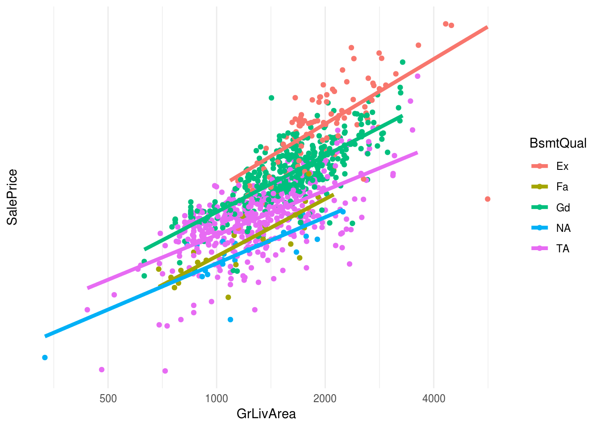
donde vemos que esta variable puede aportar a la predicción. Ajustamos y evaluamos:
mod_6 <- lm(SalePrice ~ OverallQual + I(OverallQual^2) + GrLivArea + TotalBsmtSF +
GarageArea + OverallCond + CentralAir + BsmtQual,
data = casas_e)
calc_error(mod_6, casas_p, "SalePrice")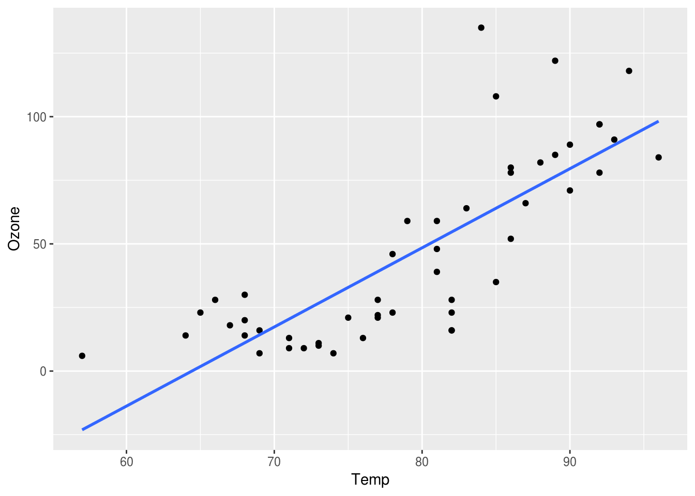
## [1] 31340.03Si examinamos los coeficientes, vemos que lm automáticamente convirtió esta variable con dummy coding:
coef(mod_6)## (Intercept) OverallQual I(OverallQual^2) GrLivArea
## 119263.78011 -44860.91908 5157.93509 49.39657
## TotalBsmtSF GarageArea OverallCond CentralAirY
## 19.98058 40.75125 6905.50493 22902.19901
## BsmtQualFa BsmtQualGd BsmtQualNA BsmtQualTA
## -66355.09397 -34231.48579 -50546.75887 -54621.42055bsmt_ind <- str_detect(names(coef(mod_6)), "BsmtQual")
coef(mod_6)[bsmt_ind] %>% sort## BsmtQualFa BsmtQualTA BsmtQualNA BsmtQualGd
## -66355.09 -54621.42 -50546.76 -34231.49Nótese que la categoría base (con coeficiente 0 es ‘Ex’, es decir, no aparece TotalBsmtEx). Esta es la razón por la que todos estos coeficientes son negativos (Ex es el mejor nivel).
Observaciones: - Nótese también que no hay coeficiente para una de las clases, por lo que discutimos arriba. También podemos pensar que el coeficiente de esta clase es 0, y así comparamos con las otras clases. - Cuando tenemos variables dummy, el intercept se interpreta con el nivel esperado cuando las variables cuantitativas valen cero, y la variable categórica toma la clase que se excluyó en la construcción de las indicadoras.
En nuestro ejemplo anterior, observamos que el nivel Fair queda por debajo de Typical y NA. Esto podría se un signo de sobreajuste (estimación con alta varianza de estos coeficientes).
6.4 Interacciones
En el modelo lineal, cada variable contribuye de la misma manera independientemente de los valores de las otras variables. Esta es un simplificación o aproximación útil, pero muchas veces puede producir sesgo demasiado grande en el modelo. Por ejemplo: consideremos los siguientes datos de la relación de mediciones de temperatura y ozono en la atmósfera:
Ejemplo
head(airquality)## Ozone Solar.R Wind Temp Month Day
## 1 41 190 7.4 67 5 1
## 2 36 118 8.0 72 5 2
## 3 12 149 12.6 74 5 3
## 4 18 313 11.5 62 5 4
## 5 NA NA 14.3 56 5 5
## 6 28 NA 14.9 66 5 6air <- filter(airquality, !is.na(Ozone) & !is.na(Wind) & !is.na(Temp))
lm(Ozone ~Temp, data = air[1:80,])##
## Call:
## lm(formula = Ozone ~ Temp, data = air[1:80, ])
##
## Coefficients:
## (Intercept) Temp
## -136.474 2.306set.seed(9132)
air <- sample_n(air, 116)
ggplot(air[1:50,], aes(x = Temp, y = Ozone)) + geom_point() +
geom_smooth(method = 'lm', se = FALSE)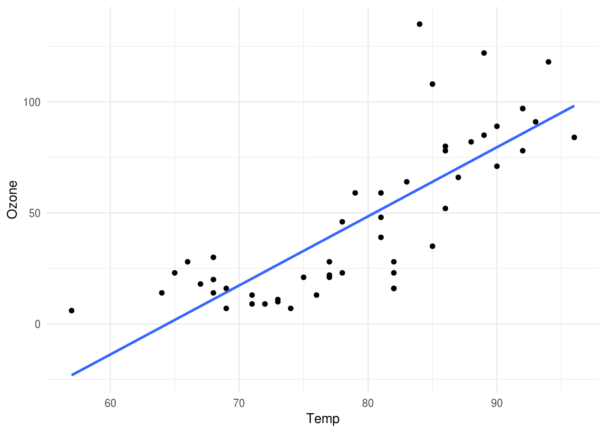
Y notamos un sesgo posible en nuestro modelo. Si coloreamos por velocidad del viento:
cuantiles <- quantile(air$Wind)
ggplot(air[1:50,], aes(x = Temp, y = Ozone, colour= cut(Wind, cuantiles))) +
geom_point() + geom_smooth(method = 'lm', se = FALSE)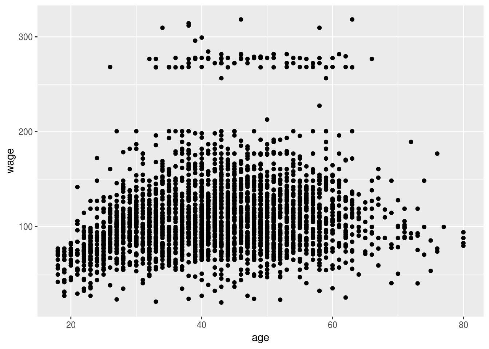
Nótese que parece ser que cuando los niveles de viento son altos, entonces hay una relación más fuerte entre temperatura y Ozono. Esto es una interacción de temperatura y viento.
Podemos hacer los siguiente: incluír un factor adicional, el producto de temperatura con viento:
air$temp_wind <- air$Temp*air$Wind
mod_0 <- lm(Ozone ~ Temp, data = air[1:50,])
mod_1 <- lm(Ozone ~ Temp + Wind, data = air[1:50,])
mod_2 <- lm(Ozone ~ Temp + Wind + temp_wind, air[1:50,])
mod_2##
## Call:
## lm(formula = Ozone ~ Temp + Wind + temp_wind, data = air[1:50,
## ])
##
## Coefficients:
## (Intercept) Temp Wind temp_wind
## -317.8272 4.8036 15.9498 -0.2311pred_0 <- predict(mod_0, newdata = air[51:116,])
pred_1 <- predict(mod_1, newdata = air[51:116,])
pred_2 <- predict(mod_2, newdata = air[51:116,])
mean(abs(pred_0-air[51:116,'Ozone']))## [1] 19.88217mean(abs(pred_1-air[51:116,'Ozone']))## [1] 17.13767mean(abs(pred_2-air[51:116,'Ozone']))## [1] 15.52405Podemos interpretar el modelo con interacción de la siguiente forma:
- Si \(Wind = 5\), entonces la relación Temperatura Ozono es: \[ Ozono = -290 + 4.5Temp + 14.6(5) - 0.2(Temp)(5) = -217 + 3.5Temp\]
- Si \(Wind=10\), entonces la relación Temperatura Ozono es: \[ Ozono = -290 + 4.5Temp + 14.6(15) - 0.2(Temp)(15) = -71 + 1.5Temp\]
Incluir interacciones en modelos lineales es buena idea para problemas con un número relativamente chico de variables (por ejemplo, \(p < 10\)). En estos casos, conviene comenzar agregando interacciones entre variables que tengan efectos relativamente grandes en la predicción. No es tan buena estrategia para un número grande de variables: por ejemplo, para clasificación de dígitos, hay 256 entradas. Poner todas las interacciones añadiría más de 30 mil variables adicionales, y es difícil escoger algunas para incluir en el modelo a priori.
Pueden escribirse interacciones en fórmulas de lm y los cálculos se hacen automáticamente:
mod_3 <- lm(Ozone ~ Temp + Wind + Temp:Wind, air[1:50,])
mod_3##
## Call:
## lm(formula = Ozone ~ Temp + Wind + Temp:Wind, data = air[1:50,
## ])
##
## Coefficients:
## (Intercept) Temp Wind Temp:Wind
## -317.8272 4.8036 15.9498 -0.2311Ejemplo
En nuestro ejemplo de precios de casas ya habíamos intentado utilizar una interacción, considerando el cociente de dos variables. Aquí veremos una que es importante: la relación entre precio y superficie debe tener interacción con el vecindario, pues distintos vecindarios tienen distintos precios por metro cuadrado:
agrupamiento <- casas_e %>% group_by(Neighborhood) %>%
summarise(media_ft2 = mean(SalePrice / GrLivArea), n = n()) %>%
arrange(desc(media_ft2)) %>%
mutate(Neighborhood_grp = ifelse(n < 60, 'Other', Neighborhood))
agrupamiento## # A tibble: 25 x 4
## Neighborhood media_ft2 n Neighborhood_grp
## <chr> <dbl> <int> <chr>
## 1 StoneBr 170. 16 Other
## 2 NridgHt 167. 50 Other
## 3 Veenker 155. 8 Other
## 4 Timber 141. 27 Other
## 5 Somerst 141. 61 Somerst
## 6 CollgCr 137. 99 CollgCr
## 7 Blmngtn 135. 13 Other
## 8 NoRidge 132. 32 Other
## 9 ClearCr 126. 20 Other
## 10 Mitchel 126. 34 Other
## # ... with 15 more rowscasas_e <- casas_e %>% left_join(agrupamiento) ## Joining, by = "Neighborhood"casas_p <- casas_p %>% left_join(agrupamiento) ## Joining, by = "Neighborhood"En la siguiente gráfica ordenamos la variable Neighborhood_grp de manera que aparecen antes vecindarios más baratos:
casas_e$Neighborhood_grp <- reorder(casas_e$Neighborhood_grp, casas_e$media_ft2, mean)
ggplot(casas_e,
aes(x=GrLivArea, y=SalePrice, colour=Neighborhood_grp, group=Neighborhood_grp)) +
geom_jitter(alpha=0.1) +
geom_smooth(method='lm', se=FALSE, size=1.5) +
scale_x_sqrt() + scale_y_sqrt() +
scale_colour_manual(values = cbbPalette)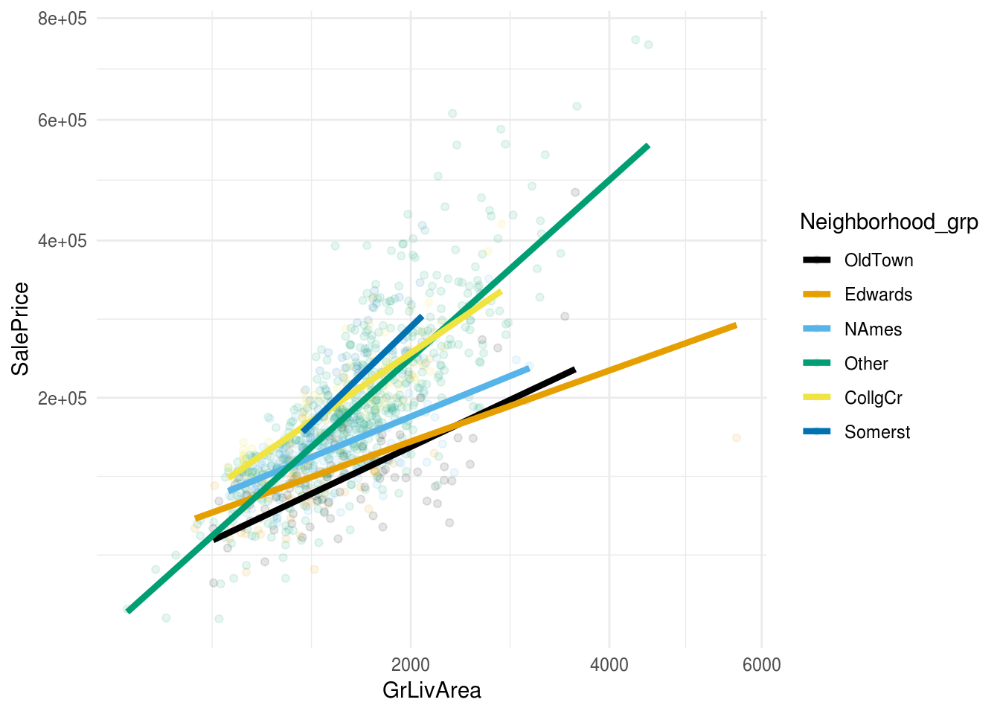
Nótese que no solo las curvas se desplazan verticalmente según el vecindario, sino que también su pendiente cambia con el vecindario. Podemos agregar esta interacción a nuestro modelo:
mod_6 <- lm(SalePrice ~ OverallQual + I(OverallQual^2) + GrLivArea + TotalBsmtSF +
GarageArea + OverallCond + CentralAir + BsmtQual + Neighborhood_grp +
Neighborhood_grp:GrLivArea,
data = casas_e)
calc_error(mod_6, casas_p, "SalePrice")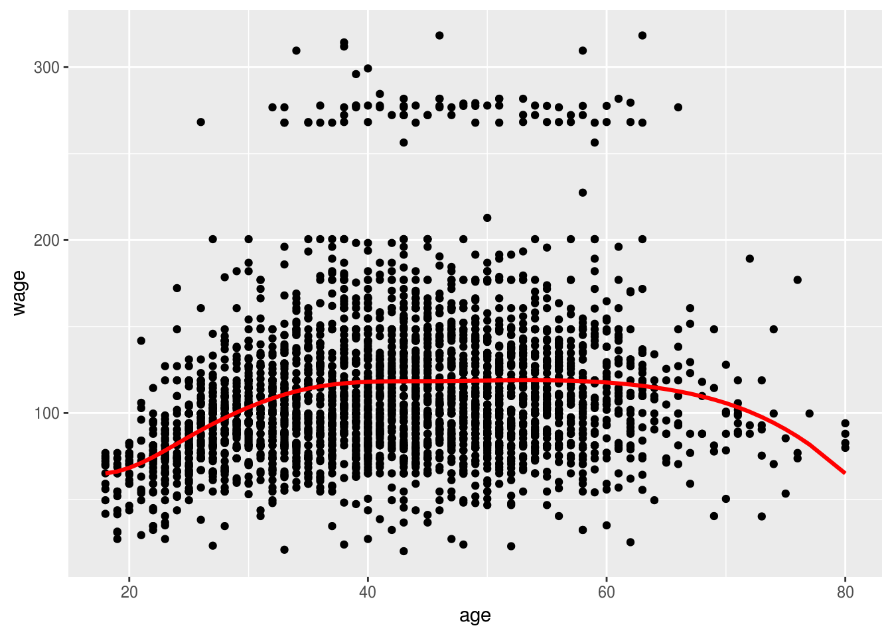
## [1] 25027.356.5 Categorización de variables
En categorización de variable, intentamos hacer un ajuste local en distintas partes del espacio de entrada. La idea es contruir cubetas, particionando el rango de una variable dada, y ajustar entonces un modelo usando la variable dummy indicadora de cada cubeta.
dat_wage <- ISLR::Wage
ggplot(dat_wage, aes(x=age, y=wage)) + geom_point()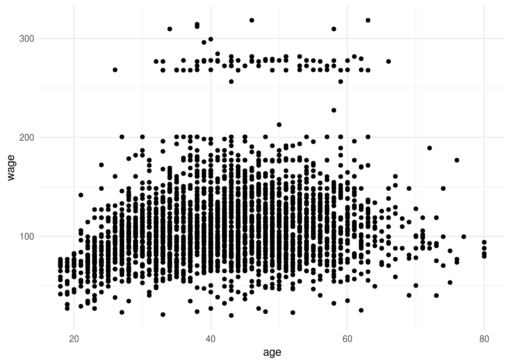
Cuando la relación entre entradas y salida no es lineal, podemos obtener menor sesgo en nuestros modelos usando esta técnica. En este ejemplo, escogimos edades de corte aproximadamente separadas por 10 años, por ejemplo:
#cuantiles_age <- quantile(dat_wage$age, probs=seq(0,1,0.2))
#cuantiles_age
dat_wage <- dat_wage %>%
mutate(age_cut = cut(age, c(18, 25, 35, 45, 55, 65, 80), include.lowest=TRUE))
head(dat_wage)## year age maritl race education region
## 1 2006 18 1. Never Married 1. White 1. < HS Grad 2. Middle Atlantic
## 2 2004 24 1. Never Married 1. White 4. College Grad 2. Middle Atlantic
## 3 2003 45 2. Married 1. White 3. Some College 2. Middle Atlantic
## 4 2003 43 2. Married 3. Asian 4. College Grad 2. Middle Atlantic
## 5 2005 50 4. Divorced 1. White 2. HS Grad 2. Middle Atlantic
## 6 2008 54 2. Married 1. White 4. College Grad 2. Middle Atlantic
## jobclass health health_ins logwage wage age_cut
## 1 1. Industrial 1. <=Good 2. No 4.318063 75.04315 [18,25]
## 2 2. Information 2. >=Very Good 2. No 4.255273 70.47602 [18,25]
## 3 1. Industrial 1. <=Good 1. Yes 4.875061 130.98218 (35,45]
## 4 2. Information 2. >=Very Good 1. Yes 5.041393 154.68529 (35,45]
## 5 2. Information 1. <=Good 1. Yes 4.318063 75.04315 (45,55]
## 6 2. Information 2. >=Very Good 1. Yes 4.845098 127.11574 (45,55]mod_age <- lm(wage ~ age_cut, data=dat_wage)
mod_age##
## Call:
## lm(formula = wage ~ age_cut, data = dat_wage)
##
## Coefficients:
## (Intercept) age_cut(25,35] age_cut(35,45] age_cut(45,55]
## 76.28 27.88 42.79 41.34
## age_cut(55,65] age_cut(65,80]
## 42.73 26.27dat_wage$pred_wage <- predict(mod_age)
ggplot(dat_wage) + geom_point(aes(x=age, y=wage)) +
geom_line(aes(x=age, y=pred_wage), colour = 'red', size=1.1)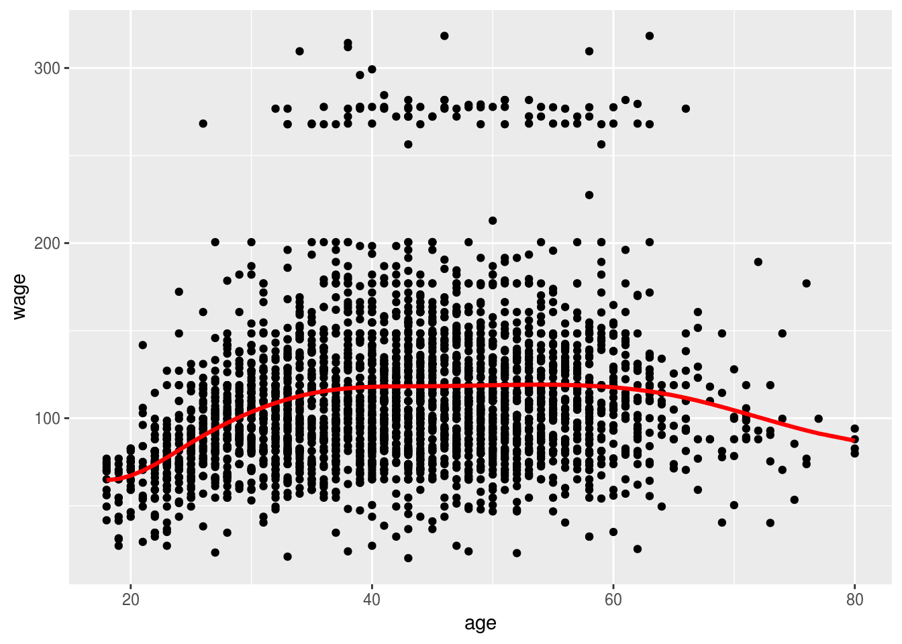
- Podemos escoger los puntos de corte en lugares que son razonables para el problema (rangos en los es razonable modelar como una constante).
- También podemos hacer cortes automáticos usando percentiles de los datos: por ejemplo, cortar en cuatro usando los percentiles 25%, 0.5% y 0.75%. Con más datos es posible incrementar el número de cortes.
- Nótese que cuando hacemos estas categorizaciones estamos incrementando el número de parámetros a estimar del modelo (si hacemos tres cortes, por ejemplo, aumentamos en 3 el número de parámetros).
Muchas veces los splines son mejores opciones:
6.6 Splines (opcional)
En estos ejemplos, también es posible incluir términos cuadráticos para modelar la relación, por ejemplo:
dat_wage$age_2 <- dat_wage$age^2
mod_age <- lm(wage ~ age + age_2, data=dat_wage)
mod_age##
## Call:
## lm(formula = wage ~ age + age_2, data = dat_wage)
##
## Coefficients:
## (Intercept) age age_2
## -10.42522 5.29403 -0.05301dat_wage$pred_wage <- predict(mod_age)
ggplot(dat_wage) + geom_point(aes(x=age, y=wage)) +
geom_line(aes(x=age, y=pred_wage), colour = 'red', size=1.1)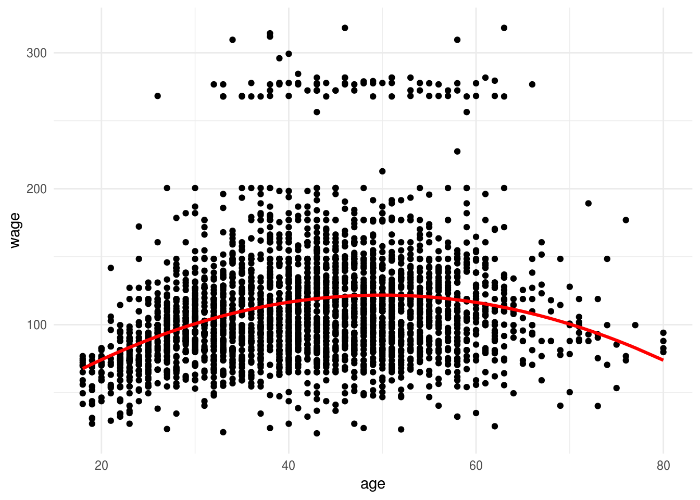
Estas dos técnicas para hacer más flexible el modelo lineal tienen algunas deficiencias:
- Muchas veces usar potencias de variables de entrada es una mala idea, pues fácilmente podemos encontrar problemas numéricos (potencias altas pueden dar valores muy chicos o muy grandes).
- La categorización de variables numéricas puede resultar en predictores con discontinuidades, lo cual no siempre es deseable (interpretación).
Una alternativa es usar splines, que son familias de funciones con buenas propiedades que nos permiten hacer expansiones del espacio de entradas. No las veremos con detalle, pero aquí hay unos ejemplos:
Por ejemplo, podemos usar B-spines, que construyen “chipotes” en distintos rangos de la variable de entrada (es como hacer categorización, pero con funciones de respuesta suaves):
library(splines2)
age <- seq(18,80, 0.2)
splines_age <- bSpline(age,
knots = c(25, 35, 45, 55, 65),
degree = 3)
matplot(x = age, y = splines_age, type = 'l')
Observación: estos splines son como una versión suave de categorización de variables numéricas. En particular, los splines de grado 0 son justamente funciones que categorizan variables:
splines_age <- bSpline(age,
knots = c(25, 35, 45, 55, 65),
degree = 0)
matplot(splines_age, type='l')
Por ejemplo: si expandimos el espacio de entradas con estos splines y corremos el modelo:
dat_wage <- ISLR::Wage
splines_age <- bSpline(dat_wage$age,
knots = c(25, 35, 45, 65),
degree = 3) %>% data.frame
colnames(splines_age) <- paste0('spline_', 1:6)
dat_wage <- bind_cols(dat_wage, splines_age)
dat_sp <- dat_wage %>% dplyr::select(wage, contains('spline'))
head(dat_sp)## wage spline_1 spline_2 spline_3 spline_4 spline_5
## 1 75.04315 0.0000000 0.000000000 0.00000000 0.0000000 0.00000000
## 2 70.47602 0.4555974 0.474260292 0.06722689 0.0000000 0.00000000
## 3 130.98218 0.0000000 0.000000000 0.33333333 0.5925926 0.07407407
## 4 154.68529 0.0000000 0.001481481 0.44018519 0.5204074 0.03792593
## 5 75.04315 0.0000000 0.000000000 0.14062500 0.6272321 0.22704082
## 6 127.11574 0.0000000 0.000000000 0.05545833 0.5406104 0.37417611
## spline_6
## 1 0.000000000
## 2 0.000000000
## 3 0.000000000
## 4 0.000000000
## 5 0.005102041
## 6 0.029755102mod_age <- lm(wage ~. , data=dat_sp)
mod_age##
## Call:
## lm(formula = wage ~ ., data = dat_sp)
##
## Coefficients:
## (Intercept) spline_1 spline_2 spline_3 spline_4
## 65.044 1.464 27.176 54.472 52.121
## spline_5 spline_6
## 58.230 31.771dat_wage$pred_wage <- predict(mod_age)
ggplot(dat_wage) + geom_point(aes(x=age, y=wage)) +
geom_line(aes(x=age, y=pred_wage), colour = 'red', size=1.1)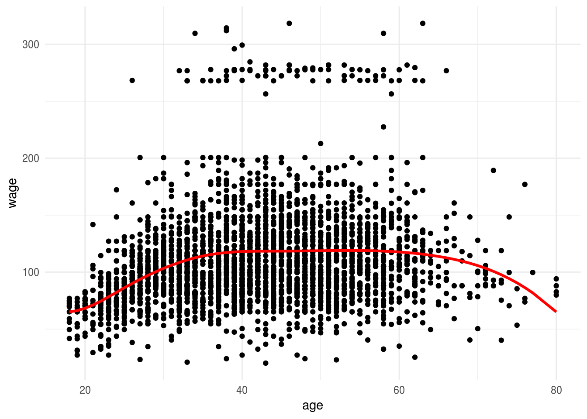
O podemos usar i-splines (b-splines integrados), por ejemplo:
splines_age <- iSpline(age,
knots = c(25, 35, 45, 65),
degree = 2)
matplot(splines_age, type='l')
dat_wage <- ISLR::Wage
splines_age <- iSpline(dat_wage$age,
knots = c(25, 35, 45, 65),
degree = 2) %>% data.frame
colnames(splines_age) <- paste0('spline_', 1:6)
dat_wage <- bind_cols(dat_wage, splines_age)
dat_sp <- dat_wage %>% dplyr::select(wage, contains('spline'))
head(dat_sp)## wage spline_1 spline_2 spline_3 spline_4 spline_5 spline_6
## 1 75.04315 0.0000000 0.00000000 0.0000000 0.00000000 0.000000000 0
## 2 70.47602 0.5414872 0.06722689 0.0000000 0.00000000 0.000000000 0
## 3 130.98218 1.0000000 1.00000000 0.6666667 0.07407407 0.000000000 0
## 4 154.68529 1.0000000 0.99851852 0.5583333 0.03792593 0.000000000 0
## 5 75.04315 1.0000000 1.00000000 0.8593750 0.23214286 0.005102041 0
## 6 127.11574 1.0000000 1.00000000 0.9445417 0.40393122 0.029755102 0mod_age <- lm(wage ~. , data=dat_sp)
mod_age##
## Call:
## lm(formula = wage ~ ., data = dat_sp)
##
## Coefficients:
## (Intercept) spline_1 spline_2 spline_3 spline_4
## 64.643 28.331 26.442 -2.510 7.600
## spline_5 spline_6
## -31.903 -5.441dat_wage$pred_wage <- predict(mod_age)
ggplot(dat_wage) + geom_point(aes(x=age, y=wage)) +
geom_line(aes(x=age, y=pred_wage), colour = 'red', size=1.1)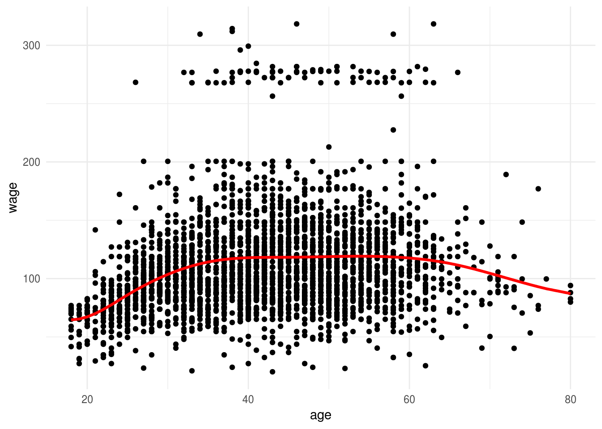
6.7 Modelando en escala logarítmica
En muchos problemas, es natural transformar variables numéricas con el logaritmo. Supongamos por ejemplo que en nuestro problema la variable \(y\) es positiva, y también las entradas son positivas. En primer lugar podríamos intentar modelar \[ y = b_0 + \sum b_j x_j \] pero también podemos transformar las entradas y la salida para construir un modelo multiplicativo: \(y' = log(y) = b_0 + \sum b_k \log(x_j)\) y ahora queremos predecir el logaritmo de \(y\), no \(y\) directamente.
Esta tipo de transformación tiene dos efectos:
- Convierte modelos aditivos (regresión lineal) en modelos multiplicativos en las variables no transformadas (pero lineales en escala logarítmica). Esta estructura tiene más sentido para algunos problemas, y es más razonable que la forma lineal aplique para este tipo de problemas.
- Comprime la parte superior de la escala en relación a la parte baja, y esto es útil para aminorar el efecto de valores atípicos grandes (que puede tener malos efectos numéricos y también pueden producir que los atipicos dominen el error o la estimación de los coeficientes).
Ejemplo
Consideramos predecir el quilataje de
set.seed(22)
diamonds_muestra <- sample_n(diamonds, 1000)
ggplot(diamonds_muestra, aes(x=carat, y=price)) + geom_point() +
geom_smooth(method="lm")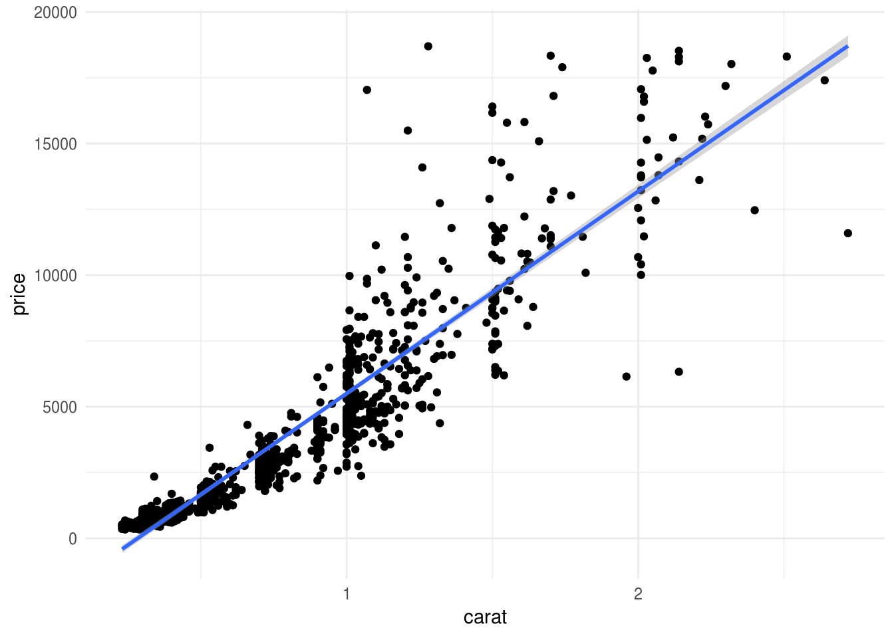
Nótese que el modelo lineal está sesgado, y produce sobrestimaciones y subestimaciones para distintos valores de \(x\). Aunque podríamos utilizar un método más flexible para este modelo, una opción es transformar entrada y salida con logaritmo:
diamonds_muestra <- diamonds_muestra %>%
mutate(log_price = log(price), log_carat = log(carat))
ggplot(diamonds_muestra, aes(x=log_carat, y=log_price)) + geom_point() +
geom_smooth(method = "lm")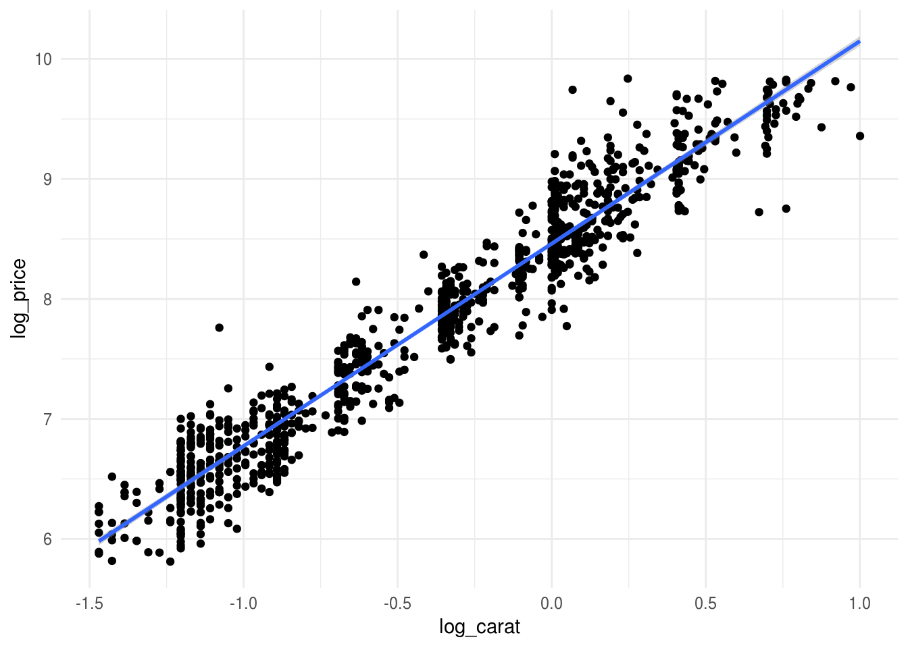
Podemos graficar también en unidades originales:
ggplot(diamonds_muestra, aes(x=carat, y=price/1000)) + geom_point() +
geom_smooth(method = 'lm') +
scale_x_log10(breaks=2^seq(-1,5,1)) + scale_y_log10(breaks=2^seq(-2,5,1))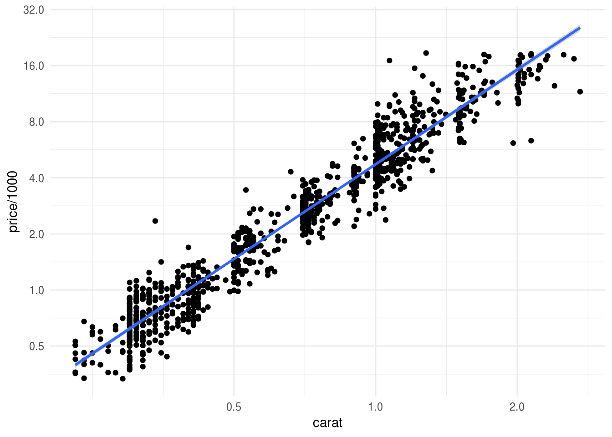
Y vemos que la relación entre los logaritmos es lineal: redujimos el sesgo sin los costos adicionales de varianza que implica agregar más variables e interacciones. En este caso, esta relación es naturalmente multiplicativa (un 10% de incremento relativo en el peso produce un incremento constante en el precio).
- Cuando una variable toma valores positivos y recorre varios órdenes de magnitud, puede ayudar transformar con logaritmo o raíz cuadrada (esto incluye transformar la variable respuesta).
- Muchas veces es natural modelar en la escala logarítmica, como en el ejemplo de los diamantes.
- También tiene utilidad cuando las variables de respuesta o entrada tienen distribuciones muy sesgadas a la derecha (con algunos valores órdenes de magnitud más grandes que la mayoría del grueso de los datos). Tomar logaritmos resulta en mejoras numéricas, y evita que algunos valores atipicos dominen el cálculo del error.
- Menos común: variables que son proporciones \(p\) pueden transformarse mediante la transformación inversa de la logística (\(x = \log(\frac{p}{1-p})\).)
Discusión:
En un modelo lineal usual, tenemos que si cambiamos \(x_j \to x_j + \Delta x\), entonces la predicción \(y\) tiene un cambio de \[\Delta y = b_j \Delta x.\]
Es decir, mismos cambios absolutos en alguna variable de entrada produce mismos cambios absolutos en las predicciones, independientemente del nivel de las entradas.
Sin embargo, el modelo logarítmico es multiplicativo, pues tomando exponencial de ambos lados, obtenemos:
\[y = B_0\prod x_j^{b_j}\] Entonces, si cambiamos \(x_j \to x_j + \Delta x\), el cambio porcentual en \(y\) es \[ \frac{y+\Delta y}{y} = \left ( \frac{x_j +\Delta x}{x_j}\right )^{b_j}\]
De modo que mismos cambios porcentuales en \(x\) resultan en los mismos cambios porcentuales de \(y\), independientemente del nivel de las entradas.
Adicionalmente, es útil notar que si \(\frac{\Delta x}{x_j}\) es chica, entonces aproximadamente \[ \frac{\Delta y}{y} \approx b_j \frac{\Delta x}{x_j}\] Es decir, el cambio relativo en \(y\) es proporcional al cambio relativo en \(x_j\) para cambios relativamente chicos en \(x_j\), y el coeficiente es la constante de proporcionalidad
Ejercicio
Puedes repetir el ejercicio de la tarea 6 transformando las variables numéricas con logaritmo (o \(\log(1+x)\) cuando \(x\) tiene ceros). Utiliza el mismo error del concurso de kaggle, que es el error cuadrático medio en escala logarítmica (en el concurso, esta es otra razón para usar escala logarítmica en la variable respuesta.)
6.7.1 ¿Cuándo usar estas técnicas?
Estas técnicas pueden mejorar considerablemente nuestros modelos lineales, pero a veces puede ser difícil descubrir exactamente que transformaciones pueden ser útiles, y muchas veces requiere conocimiento experto del problema que enfrentamos. En general,
- Es mejor usar regularización al hacer este tipo de trabajo, para protegernos de varianza alta cuando incluimos varias entradas derivadas.
- Es buena idea probar incluir interacciones entre variables que tienen efectos grandes en la predicción, o interacciones que creemos son importantes en nuestro problema (por ejemplo, temperatura y viento en nuestro ejemplo de arriba, o existencia de estacionamiento y tráfico vehicular como en nuestro ejemplo de predicción de ventas de una tienda).
- Gráficas como la de arriba (entrada vs respuesta) pueden ayudarnos a decidir si conviene categorizar alguna variable o añadir un efecto no lineal.
Este es un trabajo que no es tan fácil, pero para problema con relativamente pocas variables es factible. En situaciones con muchas variables de entrada y muchos datos, existen mejores opciones.